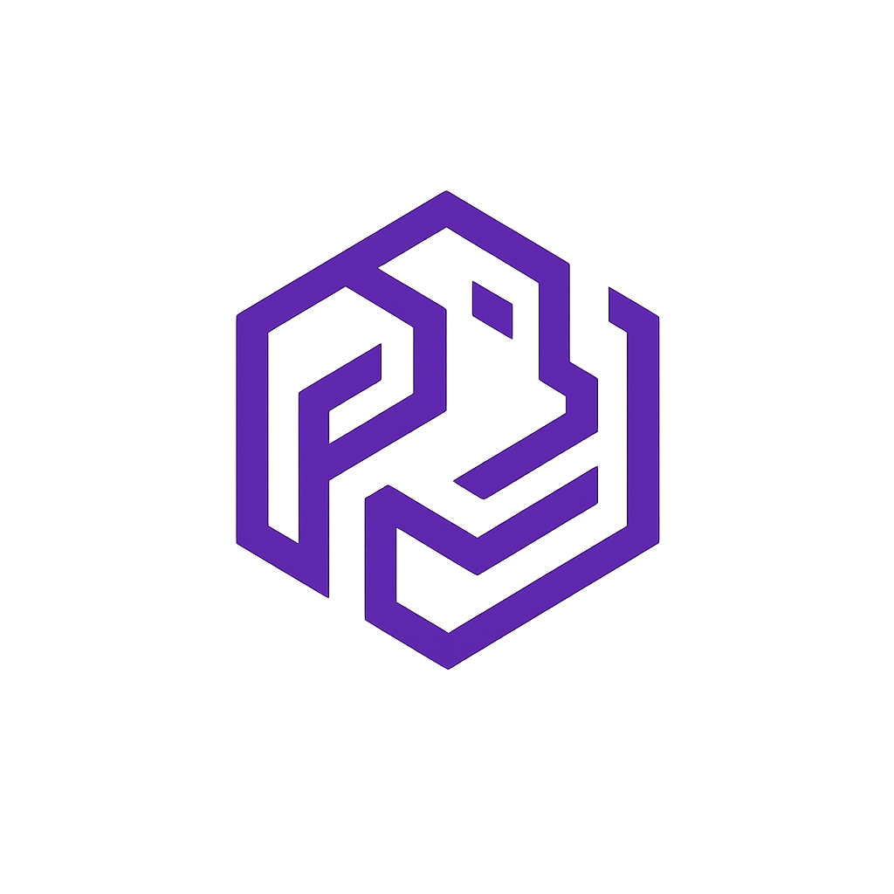

Omnixys Authentication API Documentation - v1.0.0
🛡️ Omnixys Authentication Service

The Fabric of Modular Innovation
{kind=link}


📖 Table of Contents
🇬🇧 English Version
🔎 Overview
The Omnixys Authentication Service is a secure authentication and authorization microservice built with NestJS and integrated with Keycloak, Kafka, Redis, and Apollo Federation.
It manages user identities, token validation, and inter-service authentication across the Omnixys ecosystem.
✨ Features
- 🔑 Keycloak-based user management (OAuth2 / OpenID Connect)
- 🧩 GraphQL Federation (Apollo v4)
- ⚙️ Kafka Event Dispatcher integration
- 💾 Redis caching and token storage
- 📦 Modular architecture with NestJS
- 🧠 Strong type safety (TypeScript 5+)
- 🧾 Pino-based structured logging
- 🐳 Docker & Docker Compose ready
🧩 Tech Stack
| Layer | Technology |
|---|---|
| Runtime | Node.js 22+ |
| Framework | NestJS 11 |
| Authentication | Keycloak 25+ |
| Message Broker | KafkaJS |
| Cache / Session | Redis |
| API Layer | Apollo Federation (GraphQL) |
| Logger | Pino |
| Package Manager | pnpm |
| Containerization | Docker |
📂 Folder Structure
authentication/
├── .github/ # GitHub configuration and automation
│ ├── workflows/ # CI/CD & security pipelines
│ │ ├── test.yml # 🧪 E2E Authentication Tests (Keycloak, Redis, Kafka, Postgres)
│ │ ├── ci-cd.yml # Build & deploy pipeline
│ │ ├── codeql.yml # CodeQL security scanning
│ │ ├── security.yml # Dependency vulnerability checks
│ │ └── release.yml # Automated versioning & release tagging
│ │
│ ├── ISSUE_TEMPLATE/ # Structured GitHub issue templates
│ │ ├── auth_bug_report.yml
│ │ ├── auth_feature_request.yml
│ │ ├── auth_security_vulnerability.yml
│ │ └── task.yml
│ │
│ ├── DISCUSSION_TEMPLATE/ # GitHub Discussions templates
│ │ ├── auth_question.yml
│ │ ├── auth_idea.yml
│ │ └── auth_implementation.yml
│ │
│ ├── CODEOWNERS # Maintainer ownership
│ ├── CODE_OF_CONDUCT.md # Contributor behavior guidelines
│ ├── CONTRIBUTING.md # Contribution setup & pull request rules
│ ├── SECURITY.md # Responsible disclosure policy
│ ├── LICENSE # GPL-3.0-or-later license file
│ └── dependabot.yml # Automated dependency update rules
│
├── __tests__/ # Automated test suite
│ ├── e2e/ # End-to-End test layer
│ │ ├── authentication/
│ │ │ ├── authentication.login.e2e-spec.ts # Login / Refresh / Logout
│ │ │ ├── authentication.signup.e2e-spec.ts # User & Admin registration (SignUp flow)
│ │ │ ├── authentication.user.e2e-spec.ts # Me / Update profile / Change password / Send mail
│ │ │ └── authentication.admin.e2e-spec.ts # Admin operations (roles, update, delete)
│ │ ├── graphql-client.ts # Request helper (cookies, retries)
│ │ ├── setup-e2e.ts # Bootstraps Nest test app with real Keycloak
│ │ ├── jest-e2e.json # Jest configuration for E2E tests
│ │ └── tsconfig.spec.json # TypeScript config for test compilation
│ │
│ └── keycloak/
│ ├── ci.env # Keycloak credentials used in CI runs
│ └── realm.json # Imported test realm for CI Keycloak instance
│
├── src/ # NestJS source code
│ ├── admin/ # Admin module (shutdown, restart, maintenance)
│ ├── authentication/ # Authentication & Keycloak integration layer
│ ├── config/ # Environment & system configuration
│ ├── handlers/ # Kafka event & domain logic handlers
│ ├── health/ # Liveness & readiness probes
│ ├── logger/ # Pino logger setup & response interceptors
│ ├── messaging/ # KafkaJS producer / consumer abstraction
│ ├── redis/ # Redis client, cache & pub/sub
│ ├── security/ # HTTP headers, CORS & helmet middleware
│ ├── trace/ # Tempo tracing / OpenTelemetry integration
│ ├── app.module.ts # Root NestJS application module
│ └── main.ts # Application bootstrap entrypoint
│
├── public/ # Static assets
│ ├── favicon/
│ ├── favicon.ico
│ ├── logo.png
│ └── theme.css
│
├── log/ # Runtime log output
│ └── server.log
│
├── .env # Main environment configuration
├── .env.example # Example environment for developers
├── .health.env # Health probe endpoints (Keycloak, Tempo)
│
├── Dockerfile # Production Docker image
├── docker-bake.hcl # Multi-stage build setup for Docker Bake
│
├── eslint.config.mjs # ESLint configuration (TypeScript + Prettier)
├── nest-cli.json # NestJS CLI settings
├── package.json # Project metadata & scripts
├── pnpm-lock.yaml # pnpm dependency lockfile
├── pnpm-workspace.yaml # Monorepo workspace setup
├── tsconfig.json # Root TypeScript configuration
├── tsconfig.build.json # Build-only TypeScript config
├── typedoc.cjs # TypeDoc configuration for API docs
└── README.md # Main project documentation
⚙️ Environment Configuration
The Omnixys Authentication Service uses environment variables to control runtime behavior, security integration, and observability.
All values can be defined in a local .env file or provided via Docker Compose, Kubernetes Secrets, or CI/CD environments (e.g., GitHub Actions).
🧩 Core Application Settings
| Variable | Description | Default |
|---|---|---|
SERVICE |
Logical name of the microservice | authentication |
PORT |
Port on which the NestJS service listens | 7501 |
GRAPHQL_PLAYGROUND |
Enables GraphQL Playground for development | true |
KEYS_PATH |
Relative path to SSL/TLS key and certificate files | ../../keys |
NODE_ENV |
Execution mode (development, production, test) |
development |
HTTPS |
Enables HTTPS (true / false) |
false |
KAFKA_BROKER |
Kafka broker address (host:port) |
localhost:9092 |
🧪 Test Credentials
These variables are used for local E2E and integration testing. Never use them in production — instead, inject credentials through your CI/CD secrets store.
| Variable | Description | Default |
|---|---|---|
OMNIXYS_ADMIN_USERNAME |
Administrator username | admin |
OMNIXYS_ADMIN_PASSWORD |
Administrator password | change-me |
OMNIXYS_USER_USERNAME |
Standard user username | user |
OMNIXYS_USER_PASSWORD |
Standard user password | change-me |
OMNIXYS_EMAIL_DOMAIN |
Default email domain for test users | omnixys.com |
🪵 Logging Configuration
| Variable | Description | Default |
|---|---|---|
LOG_LEVEL |
Minimum log level (debug, info, warn, etc.) |
debug |
LOG_PRETTY |
Pretty-print logs for readability (dev only) | true |
LOG_DEFAULT |
Enables NestJS default logger output | false |
LOG_DIRECTORY |
Folder for file-based logs | log |
LOG_FILE_DEFAULT_NAME |
Default filename for generated logs | server.log |
🔐 Keycloak Configuration
Defines connection parameters for the integrated Keycloak Identity Provider. Required for authentication, authorization, and token issuance.
| Variable | Description | Default |
|---|---|---|
KC_URL |
Base URL of the Keycloak instance | http://localhost:18080/auth |
KC_REALM |
Keycloak realm name | camunda-platform |
KC_CLIENT_ID |
Registered Keycloak client ID | camunda-identity |
KC_CLIENT_SECRET |
Secret for the configured Keycloak client | (none) |
KC_ADMIN_USERNAME |
Keycloak admin username | admin |
KC_ADMIN_PASS |
Keycloak admin password | change-me |
💾 Redis Configuration
Defines the in-memory data store used for token caching, rate limiting, and user sessions.
| Variable | Description | Default |
|---|---|---|
REDIS_HOST |
Redis hostname | 127.0.0.1 |
REDIS_PORT |
Redis port | 6379 |
REDIS_USERNAME |
Redis username (optional) | (empty) |
REDIS_PASSWORD |
Redis password (optional) | (empty) |
REDIS_URL |
Full Redis connection URI | redis://:${REDIS_PASSWORD}@localhost:6379 |
REDIS_PC_JWE_KEY |
Encryption key used for token caching (Base64) | your-jwe-key |
REDIS_PC_TTL_SEC |
Token cache time-to-live (seconds) | 2592000 (30 days) |
🛰️ Tracing & Observability
| Variable | Description | Default |
|---|---|---|
TEMPO_URI |
Tempo tracing collector endpoint | http://localhost:4318/v1/traces |
❤️ Health Check Endpoints
Defines local and remote health probe targets for monitoring (e.g., Kubernetes, Prometheus).
| Variable | Description | Default |
|---|---|---|
KEYCLOAK_HEALTH_URL |
Keycloak service health endpoint | http://localhost:18080/auth |
TEMPO_HEALTH_URL |
Tempo tracing health metrics endpoint | http://localhost:3200/metrics |
PROMETHEUS_HEALTH_URL |
Prometheus metrics target endpoint | http://localhost:9090/-/healthy |
🚀 Setup & Installation
# 1. Clone repository
git clone https://github.com/omnixys/omnixys-authentication-service.git
cd authentication
# 2. Copy environment file
cp .env.example .env
# 3. Install dependencies
pnpm install
🏃 Running the Server
Development:
pnpm run start:dev
Production:
pnpm run build
pnpm run start:prod
Access GraphQL playground: http://localhost:7501/graphql
🧠 GraphQL Example
mutation Login {
login(input: { username: "admin", password: "p" }) {
accessToken
refreshToken
expiresIn
}
}
🛠️ Troubleshooting
| Problem | Solution |
|---|---|
| Keycloak not reachable | Ensure docker compose up started and port 18080 is open |
.env not loaded |
Add import dotenv from 'dotenv'; dotenv.config(); in env.ts |
Input object empty {} |
Add @IsString() and @IsNotEmpty() decorators to GraphQL InputType |
.tsbuildinfo created |
Use rm -f tsconfig.build.tsbuildinfo && nest start --watch |
🧰 Development Commands
# Run linter
pnpm run lint
# Format code
pnpm run format
# Run tests
pnpm run test
💬 Community & Feedback
Join the Omnixys developer community to discuss ideas, report issues, or request support for the Authentication Service.
| Purpose | How to Participate |
|---|---|
| 💡 Propose a Feature | Start a Feature Discussion |
| 🧪 Discuss Implementation Details | Join an Architecture Thread |
| ❓ Ask a Question or Get Support | Open a Question |
| 🧵 General Feedback / Meta | Start a General Discussion |
| 🐛 Report a Bug | Create a Bug Report |
| 🔒 Report a Security Issue | Submit Security Report |
| 🆘 Need Help with Setup? | Use the Support Template |
🧭 Contribution Guidelines
Before contributing, please review:
CONTRIBUTING.md– Code style, branching, and PR workflowSECURITY.md– Responsible vulnerability disclosureCODE_OF_CONDUCT.md– Contributor expectations and community standards
All contributions, feedback, and discussions are welcome in English to maintain international collaboration and consistency across all Omnixys projects.
🤝 Contributing
- Fork the repository
- Create a branch (
git checkout -b feature/my-feature) - Commit (
pnpm run lint && git commit -m "feat: add feature") - Push & open a Pull Request
🧾 License & Contact
Licensed under GPL-3.0-or-later
© 2025 Caleb Gyamfi – Omnixys Technologies
🌍 omnixys.com
📧 contact@omnixys.tech
🇩🇪 Deutsche Version
🔎 Übersicht
Der Omnixys Authentication Service ist ein sicherer Authentifizierungs- und Autorisierungs-Mikroservice auf Basis von NestJS, integriert mit Keycloak, Kafka, Redis und Apollo Federation.
Er verwaltet Benutzeridentitäten, Token und Kommunikationssicherheit im gesamten Omnixys-Ökosystem.
✨ Funktionen
- 🔑 Keycloak-basierte Authentifizierung (OAuth2 / OIDC)
- 🧩 GraphQL Federation Unterstützung
- ⚙️ Kafka Event Dispatcher
- 💾 Redis für Cache & Tokens
- 📦 Modularer Aufbau mit NestJS
- 🧠 TypeScript 5+ für Typensicherheit
- 🧾 Pino-Logging
- 🐳 Docker-Unterstützung
🧩 Technologie-Stack
📁 Projektstruktur
⚙️ Umgebungsvariablen
🚀 Installation & Setup
git clone https://github.com/omnixys/omnixys-authentication-service.git
cd authentication
cp .env.example .env
pnpm install
🏃 Server Starten
Entwicklung:
pnpm run start:dev
Produktion:
pnpm run build
pnpm run start:prod
GraphQL Playground: http://localhost:7501/graphql
🧠 GraphQL Beispiel
mutation Login {
login(input: { username: "admin", password: "p" }) {
accessToken
refreshToken
expiresIn
}
}
🛠️ Fehlerbehebung
| Problem | Lösung |
|---|---|
| Keycloak nicht erreichbar | docker compose up starten und Port 18080 prüfen |
.env wird nicht geladen |
dotenv.config() in env.ts einfügen |
Input bleibt leer {} |
@IsString() und @IsNotEmpty() in InputType setzen |
.tsbuildinfo Datei entsteht |
rm -f tsconfig.build.tsbuildinfo && nest start --watch verwenden |
🧰 Entwicklungsbefehle
pnpm run lint
pnpm run format
pnpm run test
💬 Community & Feedback
Tritt der Omnixys-Entwicklercommunity bei, um Ideen zu diskutieren, Probleme zu melden oder Unterstützung für den Authentication Service zu erhalten.
| Zweck | Teilnahme |
|---|---|
| 💡 Feature-Vorschlag einreichen | Neue Funktionsdiskussion starten |
| 🧪 Implementierungsdetails diskutieren | Architektur-Thread beitreten |
| ❓ Fragen oder Hilfe anfordern | Neue Frage stellen |
| 🧵 Allgemeines Feedback / Meta | Allgemeine Diskussion starten |
| 🐛 Fehler melden | Bug Report erstellen |
| 🔒 Sicherheitsproblem melden | Sicherheitsbericht einreichen |
| 🆘 Hilfe beim Setup | Support-Vorlage verwenden |
🧭 Beitragsrichtlinien
Bevor du Änderungen einreichst, lies bitte die folgenden Dokumente:
CONTRIBUTING.md– Code-Style, Branching-Strategie und Pull-Request-WorkflowSECURITY.md– Verantwortungsvolle Meldung von SicherheitslückenCODE_OF_CONDUCT.md– Erwartungen an Mitwirkende und Verhaltensregeln innerhalb der Community
Alle Beiträge, Rückmeldungen und Diskussionen sind in englischer Sprache willkommen, um eine einheitliche und internationale Zusammenarbeit in allen Omnixys-Projekten sicherzustellen.
🤝 Mitwirken
- Repository forken
- Branch erstellen (
git checkout -b feature/mein-feature) - Commit durchführen (
pnpm run lint && git commit -m "feat: neues feature") - Pull Request öffnen
🧾 Lizenz & Kontakt
Lizensiert unter GPL-3.0-or-later
© 2025 Caleb Gyamfi – Omnixys Technologies
🌍 omnixys.com
📧 contact@omnixys.tech